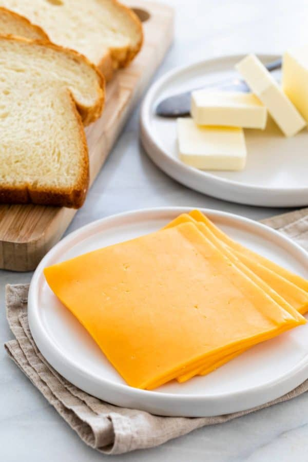
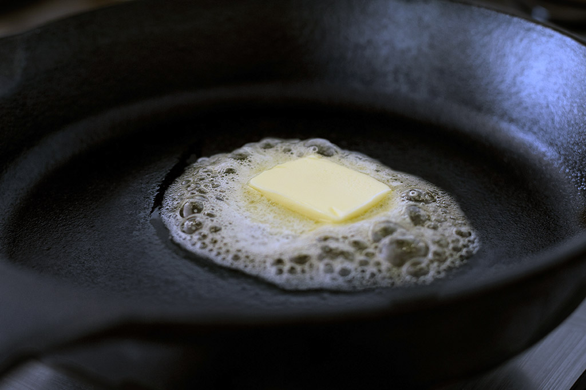
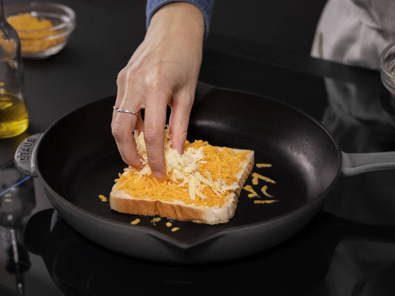

1. Grab your ingredients. Put a pan on the stove and turn it up to low-medium heat, depending on how fast you want to cook this grilled cheese.
2. Once the pan is warm, slide some butter on the pan, about the area of how big the bread is. Once the butter starts to sizzle, put a slice of bread on the pan.
3. Add 1-2 slices of cheese on top of the bread, or shredded cheese if that’s what you prefer.
4. Add the second slice of bread on top.
5. Wait until the side currently cooking is golden brown. Once it is golden brown, flip the sandwich.
6. Cook the other side until golden brown and cheese is melted.